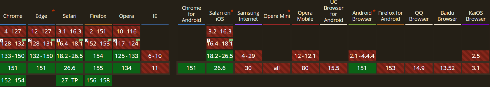

Explication
Historiquement, centrer parfaitement un texte ou l'aligner avec une
icône était un cauchemar à cause du "half-leading" : l'espace vertical
invisible généré par la police de caractères (pour les ascendantes et
descendantes). La propriété text-box-trim (et sa propriété
sœur text-box-edge) permet enfin de rogner cet espace pour
que la boîte englobante "colle" exactement à la hauteur réelle des
lettres (comme dans les logiciels de design type Figma).
Démo Live
Code CSS
.titre {
text-box-trim: trim-both;
text-box-edge: cap alphabetic;
}
/* Syntaxe raccourcie */
.titre {
text-box: trim-both cap alphabetic;
}Compatibilité et Fallback

Fallback : De l'amélioration progressive pure ! Les
anciens navigateurs ignoreront simplement ces propriétés et afficheront
le texte avec son espacement vertical habituel. Pas besoin de requête
@supports spécifique.